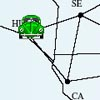

El viaje
Descripción|  |
Para el problema de representación del viaje, tenemos el siguiente enunciado: Nos encontramos en una ciudad andaluza (por ejemplo, Sevilla) y queremos viajar hasta otra de esa misma comunidad (en este caso, Almería). |
Para ello sólo podemos viajar de una capital de provincia a otra siempre que sean vecinas, es decir, que sus fronteras sean colindantes.
RepresentaciónA partir de este enunciado hemos tomado como estado el lugar de Andalucía en el que nos encontramos en cada momento.
- Estado inicial: Sevilla, ciudad de partida del viaje.
- Estado objetivo: Almería, ciudad a la que se pretende llegar.
A partir del estado inicial se crea el espacio de estados, aplicando una serie de operadores que hemos definido, basándonos en el enunciado:
- IR_AL "Ir a Almería."
- IR_CA "Ir a Cádiz."
- IR_CO "Ir a Córdoba."
- IR_GR "Ir a Granada."
- IR_HU "Ir a Huelva."
- IR_JA "Ir a Jaen."
- IR_MA "Ir a Málaga."
- IR_SE "Ir a Sevilla."
Cada uno de estos operadores se podrá aplicar a un estado siempre y cuando éste cumpla su precondición:
- Ejemplo: IR_AL, este operador sólo se podrá utilizar cuando nos encontremos en provincias colindantes con Almería, en este caso, en Granada o en Jaén.
En cuanto a las estrategias utilizadas para este problema de representación, hemos utilizado estrategias no informadas:
- Búsqueda con Profundización Iterativa (IDS)
- Tiempo de ejecución: Aprox. 13 ms.
- Número de nodos expandidos: 20
- Solución: En 3 pasos(IR_CO, IR_GR, IR_AL)
- Búsqueda Primero en Anchura (BFS)
- Tiempo de ejecución: Aprox. 40 ms.
- Número de nodos expandidos: 28
- Solución: En 3 pasos(IR_CO, IR_GR, IR_AL)
- Búsqueda Primero en Profundidad (DFS)
- No se llega a la solución, debido a que se queda infinitamente ciclando.
- Búsqueda con límite de Profundidad (DLS)
- El límite en profundidad utilizado es 7.
- Tiempo de ejecución: Aprox. 30 ms.
- Número de nodos expandidos: 21
- Solución: En 7 pasos(IR_CA, IR_HU, IR_CA, IR_MA, IR_CO, IR_GR, IR_AL)
Además de una heurística, basada en la distancia de Manhattan, que asocia a cada estado el número mínimo de pasos que le quedan para llegar hasta el objetivo, la hemos denominado HeurísticaViaje.
- Tiempo de ejecución: Aprox. 60 ms.
- Número de nodos expandidos: 6
- Solución: En 3 pasos(IR_CO, IR_GR, IR_AL)
Para este problema podemos observar que a pesar de que es bastante sencillo, la heurística hace que el número de nodos expandidos sea mínimo por lo que es eficiente. Además podemos ver, que la búsqueda con límite en profundidad no es óptima ya que pasamos por estados que son intrascendentes para la solución, pasando de 3 pasos que nos ofrecen el resto de estrategias a 7.